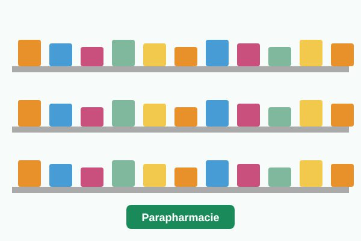

Pharmacie Ndèye Coumba
Au-delà de la délivrance des médicaments, nous vous accompagnons au quotidien.

Posologie, effets indésirables, interactions entre médicaments : la pharmacienne et son équipe répondent à vos questions, sans rendez-vous.

Soins du corps et du visage, hygiène, produits pour bébé, compléments alimentaires : consultez notre catalogue pour savoir ce qui est disponible.

Gratuite et sans rendez-vous, du lundi au samedi. Le résultat vous est remis sur une fiche à montrer à votre médecin.

Si un produit n'est pas en stock, nous le commandons auprès de nos fournisseurs. Il est en général disponible sous 48 heures.
La vente de médicaments se fait uniquement au comptoir, sur conseil de la pharmacienne et, si nécessaire, sur présentation d'une ordonnance.
Pharmacie Ndèye Coumba · Route principale, à côté du rond-point, Guédiawaye
Téléphone : 77 000 00 00 · E-mail : pharmacie.ndeyecoumba@exemple.sn
Ouvert du lundi au samedi, de 8 h à 22 h
Projet pédagogique · structure fictive